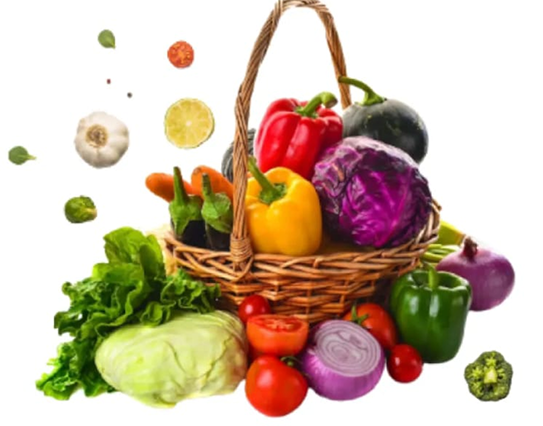

Juicily and flavorful,
perfect for your cooking
Purely Grown
Organic Fresh Food
Eat Organic
Stay Healthy
Healthy Habit

Organic Foods are grown and processed without synthetic chemicals
like pesticides and
fertilizers, or artificial ingredients.
